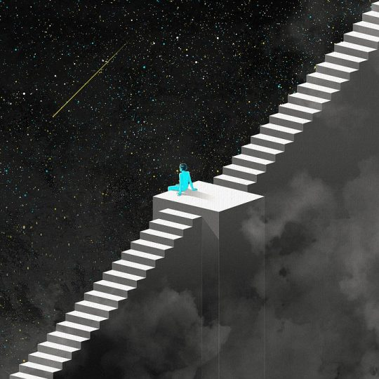

This article (Astrology & Science) was written for the wonderful Ephemeris.Co – we work together to bring the magic of Astrology to your world :
This is potentially the trickiest topic to approach when it comes to Astrology. Is this a science? Is it art? Is it psychic? Intuitive?
The answer is, none of these, and all of them. Strictly speaking Astrology is not a science. Science has specific rules and guidelines that Astrology just doesn't fit into. However, what we can say about Astrology is that is is one of those practices that can be repeatedly applied – in some areas – to get the same, or similar results. Science itself has also shown its limitations. There are a number of studies coming out that are now proving "woo-woo" or "new age" beliefs which have been trusted – and looked down on – for millennia. Science has relied very much on reason and the rational – what can be seen, as opposed to unseen forces, and as science matures, it is realising that the concept of science has to be expanded.
Thousands of years ago, star-watchers in Babylon noted down the movement of the planets wandering amongst the stars and correlated certain events here on Earth with particular arrangements in the sky. Over many years, astrologers built on this their own knowledge to create hypothesis's about political events, natural disasters, the rise and fall of Kings and the start of wars.
However, it's important to remember that Astrology is more of a symbolic representation than a hard science – it is a very indicble of intuition and rational, of the right and left brain, of art and science. Astrology could be called a blend of science and pseudoscience.
An example is Eclipses –
- Eclipses have a 19-year cycle, which means that the same Eclipse happens in the same zodiac sign every 19 years. Ancient Astrologers noted that the same kinds of events happened every 19 years, which is one example of how scientific – evidence based – astrology can be.
- This has been written down and recorded for us to look back and be able to make predictions about what could happen.
After all, weather watchers have forecasted the weather – sometimes they're wrong, and sometimes they're right, but they're usually close to the truth – which is precisely how astrology can be viewed. We have to remember that whilst Astrology might be a perfect tool, humans are flawed and hence we make mistakes.
Astrology is very much based on the "As Above, So Below" principle, which is essentially the idea that whatever occurs in the heavens has a mirror affect here on earth – the microcosm reflects the macrocosm. It's also useful to note that Hindu Astrology – a very, very ancient practice – uses much more scientific techniques that Western Astrology (the kind we use in the modern world) and hence has even higher results of accuracy. That said, there have been studies done using Western Astrology, that, for example, have found that a strong Mars in the Natal Chart tends to churn out Athletes. This has been a major breakthrough for the Astrological world.

Do the planets have a gravitational effect on us?
It's been shown that a complex magnetic field influences the human brain as well as helping to establish certain patterns at birth, as well as influences us throughout our lives. Our own nervous systems are receivers of powerful electro-magnetic energies, and so the powerful magnetic and gravitational pull of the planets may have an effect on us.
However, it's also the symbolic effect that we have to consider – human beings have used symbols for Millenia to describe the indescribable and to make sense of the unknown. Our subconscious mind dreams in order to process millions of thoughts and impressions, which translates itself into symbols. For example, dreaming of water often indicates powerful, chaotic emotional dramas in waking life, or dreaming of teeth falling out is often symbolic of stress. Hence, the planets symbolise certain aspects of our human nature, such as our emotional nature, love nature or our unique drives.
How does the Moon affect us?
We all know that we are mostly water, and that the Moon has a powerful effect on our moods and the tides. Woman in ancient times were governed by the Moon Cycles during their menstruation, which has been sadly lost due to artificial light. There are fertility astrologers around at this moment in time who assist women to conceive at the right time with excellent results using astrology. Babies are often born over the Full Moon as the Moon pulls on the waters in the womb.
The Moon has also shown to be extremely useful when it comes to farming. The Old Farmer's Almanac has instructions on when to plant according to the Moon's phases. And we know how much the tides are influenced during certain Moon phases!
Many more people are admitted to hospital over a Full Moon due to the effect on our emotions (lunatic – Luna means the Moon), and it has been seen that we bleed more during a Full Moon (hint – don't schedule an operation over a Full Moon!). The Moon is also known to symbolise the mind, in Eastern Astrology – our brains float in cerebral fluid, thus the Moon's pull on the mind can be very powerful indeed! It's now been shown that mental illness can be shown or even predicted using astrology – for example, people born in the Northern Hemisphere over Jan, Feb & March have been seen to have higher levels of schizophrenia. The same is shown when going to the Southern Hemisphere and switching the months (i.e. schizophrenia is shown in people born in June, July & August).
And the Sun?
Our circadian rhythms are governed by the Sun, waking us up and helping us to operate every day. During Summer, our hormonal system releases more feel-good chemicals. Of course, the Sun dictates the seasons here on earth too, and where would we be without the changing seasons? There would be no birth, growth and release, which is exactly the process that every living thing goes through from day to day. When there is Sun spot activity, our blood & water molecular structures are affected.
Conclusion
When we talk Astrology to our friends and family, and perhaps even to our clients, it's up to use be respectful towards the world of science as well as this wonderful world. We can describe Astrology as a blend of the scientific and the spiritual, of science and pseudo-science, of the rational and the intuitive. After all, Science itself is beginning to finally acknowledge the unseen world, the symbolic world, and perhaps not too far in the future, Astrology as well.